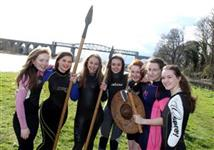
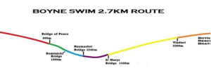

The Boyne Swim


Now in its second year, The Boyne Swim is a hard fought battle for victory in the waters of the River Boyne and is hosted by the Drogheda Triathlon Club. The course record is 27mins 46secs.
The Inaugural Boyne Swim took place in 2014 and was a huge success with 150 swimmers taking up the challenge of completing the 2.7km course.Rising in the Bog of Allen, County Kildare, the historic River Boyne flows 113km northeast to enter the Irish Sea just below Drogheda at Mornington in County Meath. The Boyne Swim is 2.7 kilometers stretch starting in Mell, Drogheda and finishing south of the famous Drogheda Viaduct Bridge.
The swim will commence at Mell in Drogheda at 1445hrs on Saturday 20th June and finish approximately 45mins later at Boyne Fisherman’s Boathouse on the Marsh road.
The perpetual trophies, commissioned from local artist Ronan Halpin, are sponsored by Drogheda Port Company. The race can be viewed from many vantage points along the river and the town bridges. Come out to cheer on the swimmers!!!!!!
If you are interested in taking part in the challenge registration details can be found at www.boyneswim.ie
For more details follow: facebook.com/TheBoyneSwim and on Twitter @BoyneSwim
Day: Saturday 20th June 2015
Start: Mell
Finish: Boyne Fisherman’s Boathouse
Time: 2:45pm Saturday 20th June 2015
Registration required